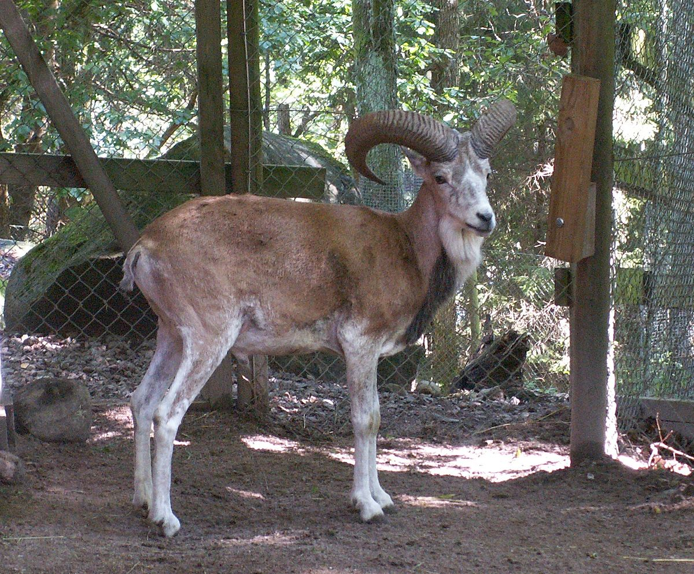

Hemis National Park
Location : The park lies within the Karakoram-West Tibetan Plateau alpine steppe ecoregion
Established in : 1981
Area : 4400 km2
Flora : Pine forests, alpine shrublands and meadows, and alpine tundra vegetation.
Fauna : About 200 snow leopards. Argali (Great Tibetan Sheep), Bharal (Blue Sheep), Shapu
(Ladakhi Urial), and livestock. A small population of the Asiatic ibex is also present in Hemis. Hemis is the only
refuge in India containing the Shapu. The Tibetan wolf, the Eurasian brown bear (endangered in India), and the red fox
are also present in Hemis. Small mammals include the Himalayan marmot, mountain weasel and the Himalayan mouse hare.
Birds present here include brown accentor, robin accentor, Tickell's leaf warbler, streaked rosefinch, black-winged
snowfinch, chukar, Blyth's swift, red-billed chough, Himalayan snowcock, and the fire-fronted serin. Among birds of
prey noted here are Himalayan and Trans-Himalayan birds of prey: the golden eagle, lammergeier vulture, and Himalayan
griffon vulture.
Features : It is the largest national park in South Asia.

Hemis National Park

Snow leopard

Ladakh urial (Shapu)

Mountain weasel